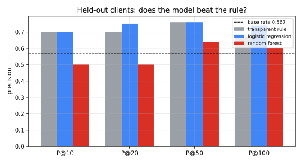
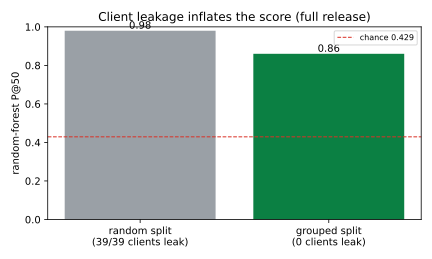
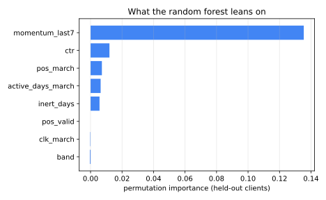
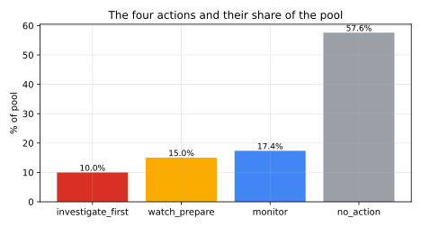

A grouped-validation refresh-opportunity playbook for Search Console data — built on the FlyRank ML Internship dataset.
A content editor can only review a handful of a portfolio's already-visible pages in a week, so something has to decide which pages get looked at first. Using March 2026 Search Console facts and an April 2026 decline outcome from the FlyRank ML Internship warehouse release — 100,893 anonymized pages across 43 clients — I trained a Random Forest and scored it against a transparent rule baseline on the same held-out clients under a grouped-by-client design. On 13 held-out clients the forest ranked about-to-decline pages at precision@50 0.86, precision@100 0.87 and ROC-AUC 0.739, against 0.44 and 0.451 for the rule at a 0.429 base rate. The strongest driver was recent impression momentum, a deliberate leak probe inflated precision@50 to 1.00 once a future-month feature was added, and a five-fold grouped check held at precision@50 0.944 ± 0.023. The result is shipped as a short, human-reviewed refresh queue with reason codes, explicit limits and monitoring triggers — decision support, not a prediction about Google's algorithm.
An editor at a content agency does not have a discovery problem; the portfolio already has thousands of pages with real impressions. The problem is allocation: the review budget is a few hundred pages per week while the library holds tens of thousands. Ranking every page by raw impressions or by "declining" alone spends that budget on pages that are either already healthy or too small to matter.
The decision this analysis supports is concrete and recurring: given a fixed weekly review budget, which already-visible pages should an editor open first — and why? Getting it wrong in one direction wastes scarce human hours on pages nobody needed; getting it wrong in the other lets a page one quietly decay while a competitor takes the click.
This is a ranking / scoring problem, not classification. The output is not a yes/no label but a priority order that an editor works down from the top, so the metric that matters is precision at the top of the queue — not overall accuracy, which is dominated by the tens of thousands of rows the editor will never open.
Two scales of the same public, anonymized internship data are used, and every result in this paper is labelled with the scale it comes from.
FlyRank/internship-warehouse on Hugging Face (public-but-gated; a read
token is needed to fetch it). Table fact_content_daily_performance, partitioned by month.declined_next_30d when its April impressions fall below 80% of March.data/raw/content_refresh_anonymized.csv — 30,000 anonymized pages, 44 columns, shipped with the
starter repo. It carries only a same-window proxy label (trend_direction == "down"), so it is
used to reproduce the method offline, never to claim the headline numbers.
Eighteen numeric signals plus eight categorical page descriptors, all taken from the trailing March window: impression/click/session aggregates (log-scaled), CTR, average position, days-with-impressions coverage, content age and days-since-update, depth (word/char counts), and engagement rates. Four features ultimately carry the model (Figure 3); the rest add robustness.
The label is the forward outcome declined_next_30d described above. The baseline is a
transparent, hand-written rule — flag page-one pages whose CTR sits in the bottom half of their position
band, weighted by impression exposure — so the comparison is against a rule an editor could apply by hand,
not a straw man.
Portfolios are the natural unit of generalization: a refresh playbook is expected to work on a
new client. Both the baseline and every model are therefore scored on the same held-out whole
clients (a seed-42 grouped split; 30 clients train, 13 held out, 20,002 held-out pages, base rate
0.429). A naive random 70/30 split is run alongside it purely to show how much client leakage inflates the
score, and a five-fold GroupKFold is run to check stability across different held-out client sets.
Logistic Regression is the readable anchor; a Random Forest (400 trees, min_samples_leaf=15) is the
strong learner. Every feature is re-checked for when it is knowable: anything derived from the labelling
window is banned. Two probes make the risk concrete — a leak probe that adds one future-month feature, and
an offline probe on the bundled slice that adds one label-derived column — both of which are shown in §4
rather than hidden.
All numbers below compare the baseline and the models on the same held-out clients at the same thresholds. Precision@K is always shown next to the base rate; the forest's early rows are correct roughly nine times out of ten where chance (and the rule) sit near four.
| Method | P@10 | P@20 | P@50 | P@100 | ROC-AUC |
|---|---|---|---|---|---|
| Rule baseline | 0.70 | 0.70 | 0.44 | 0.45 | 0.451 |
| Logistic Regression | 0.80 | 0.85 | 0.70 | 0.69 | 0.731 |
| Random Forest | 0.90 | 0.90 | 0.86 | 0.87 | 0.739 |
The rule keeps pace only for the first handful of rows, then collapses toward chance once the editor works past them — exactly where a real review session lives.

A five-fold GroupKFold over whole clients puts the forest at
P@50 = 0.944 ± 0.023 (AUC 0.751 ± 0.024), so the headline is not an artefact of one lucky
seed. Two probes then bound the result from the other side:


The model score is converted into four actions by percentile, so the queue is deliberately far smaller than the pool. The review-first tier is 1,009 pages — 1.0% of the pool, covering 0.8% of March demand, and 80.7% of those pages are already on page one: visible, but not earning the click.
| Action | Pages | Share | What the editor does |
|---|---|---|---|
| investigate_first | 1,009 | 1.0% | First pass; read the reason code and review by hand |
| watch_prepare | 1,514 | 1.5% | Draft a refresh while the evidence matures |
| monitor | 7,567 | 7.5% | Drift-watch only |
| no_action | 90,803 | 90.0% | Leave it |

Every review-first row carries feature-only reason codes, so an editor can check the "why" before spending time. In the review-first tier the dominant signal is a page that is both under-earning clicks and already decelerating.
| Reason code | Pages |
|---|---|
| ctr_gap + momentum_loss | 714 |
| momentum_loss | 285 |
| momentum_loss + volume_exposure | 7 |
| base_anchor | 1 |
| volume_exposure | 1 |
| ctr_gap + volume_exposure | 1 |
How to use it. Work the review-first tier top-down, check the reason code, and act by hand; keep the watch tier for drafting. Re-issue the queue monthly and watch two triggers — if the base rate drifts outside its expected band, or held-out precision@50 falls below 0.75, retrain before trusting the next queue.
work/notebooks/capstone.ipynb — runs top to
bottom offline, reproduces the method on the bundled slice, and regenerates every figure and table
in output/.work/notebooks/w03_data_contract.ipynb …
w07_action_playbook.ipynb, with committed receipts in work/outputs/*.json. Re-running
them requires an HF_TOKEN with read access to FlyRank/internship-warehouse.output/ (charts, evaluation tables, ranked recommendations) and
portfolio/ (this paper).python scripts/run_all.py runs the starter pipeline on the
bundled slice end to end.Data credit: Built on the FlyRank ML Internship dataset. Thanks to the FlyRank team for assembling and sharing the anonymized Search Console and engagement data that made the study possible.
Framing: all results are observational associations measured on anonymized data. Nothing
here proves Google's ranking algorithm, guarantees ranking improvements, or establishes a causal refresh
effect. Figures and tables in this paper are generated by
work/notebooks/capstone.ipynb.